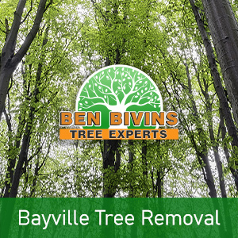
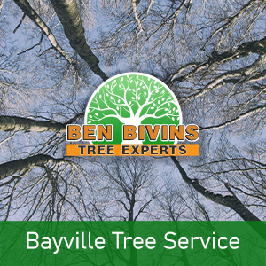

If you and your family need tree service in Bayville or tree removal in Bayville, your search is over. Ben Bivins Tree Service has been supplying quality tree services to Bayville for years.
About Bayville Tree Removal

Have you got lifeless or unattractive trees that ought to be removed? Tree removal is really a hazardous process that requires the right equipment, machinery and safety practices. Though it might be tempting to eliminate a tree on your own from your Bayville property, it may be a decision that puts yourself in danger, without having the correct knowledge. There could be various reasons why you are looking for a tree removal in Bayville:- Tree is hindering too much light on your lawn
- Tree is lifeless or detrimental and a potential safety hazard
- Tree is too large and presents a danger if big branches drop
- Tree was harmed during a weather event and is past the stage of salvaging
- You are planning on remodeling which will inevitably harm the trees
- Tree is dropping lots of limbs, leaves, or pine needles
Ben Bivins is fully insured and qualified tree company. Do not assume the risk of hiring an uninsured tree company or relying on a friend to accomplish this type of work. Our team is skillfully educated and our business has the appropriate qualifications to ensure your Bayville tree removal will be executed in the safest and most effective way possible. Tree removal necessitates utilization of serious machinery and dangerous equipment which should only be left to the pros. Leave it to the experts! Call us today for an estimate for your Bayville tree removal.
Seeking Tree Service in Bayville NJ?

We carry out all aspects of Bayville tree service. These services include:- Tree Trimming – Are trees on your property growing out of control? Is your lawn in short supply of sunlight caused by an overgrown tree? Trimming a tree’s branches may make a huge difference and could enable you to keep a tree you in any other case considered getting rid of.
- Pruning – Keep the trees happy and healthful. Pruning involves assessing a tree’s overall health and deciding to eliminate branches selectively to improve its health and sustainability.
- Crown Reduction – We are able to reduce the size of your tree’s cover using this process. Our crew will evaluate your tree and make recommendations to eliminate certain limbs that will cut back canopy coverage.
- Emergency Tree Service – Have you got a downed tree that needs speedy attention? Is there a tree which is on the verge of causing damage if it is not attended to promptly? You may be a candidate for emergency tree service.
If you’re a Bayville homeowner looking for tree service, Contact us today. Scheduling varies depending on weather, season and our current work load. We will provide you with a quotation and let you know date ranges available for service after evaluating your particular needs.
Bayville Firewood for Sale
It’s not surprising that a Bayville tree removal company can have an excess supply of firewood! If you are on the lookout for firewood for a wood burning stove or fireplace, contact us today. Firewood supply availability can vary all through the year.